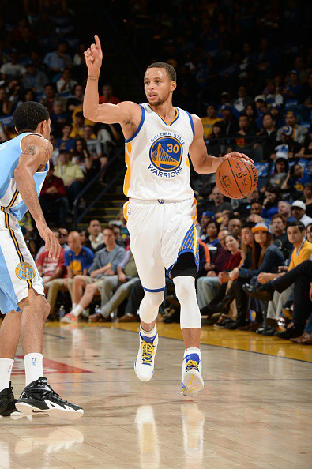
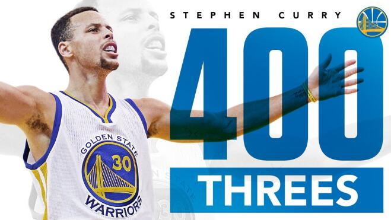

我的介绍


斯蒂芬·库里（Stephen Curry），1988年3月14日出生于美国俄亥俄州阿克伦（Akron,Ohio），美国职业篮球运动员，司职控球后卫，效力于NBA金州勇士队。 斯蒂芬·库里2009年通过选秀进入NBA后一直效力于勇士队，新秀赛季入选最佳新秀第一阵容；2014-15赛季随勇士队获得NBA总冠军；两次当选常规赛MVP，两次入选最佳阵容第一阵容，三次入选全明星赛西部首发阵容。 斯蒂芬·库里2010年随美国队获土耳其世锦赛冠军，2014年随美国队获西班牙篮球世界杯冠军。
我的生活
斯蒂芬·库里的父亲名叫戴尔·库里，曾经是20世纪八九十年代NBA著名的神射手，1993-94赛季荣膺年度“最佳第六人”，1998-99赛季以47.6%的命中率成为常规赛“三分王”。库里一直将父亲视为自己的偶像。 斯蒂芬 ·库里的妻子是阿耶莎·亚历山大 ·库里，他们是在双方父母都参加的教会活动当中认识的。尽管在高中毕业之后两人走的道路不同，阿耶莎前往洛杉矶去圆自己的演艺梦，而库里则选择了打篮球，不过分隔两地并没能让两人的恋情终止。2011年7月30日，库里和女友阿耶莎结束了近四年的爱情长跑，正式完婚。